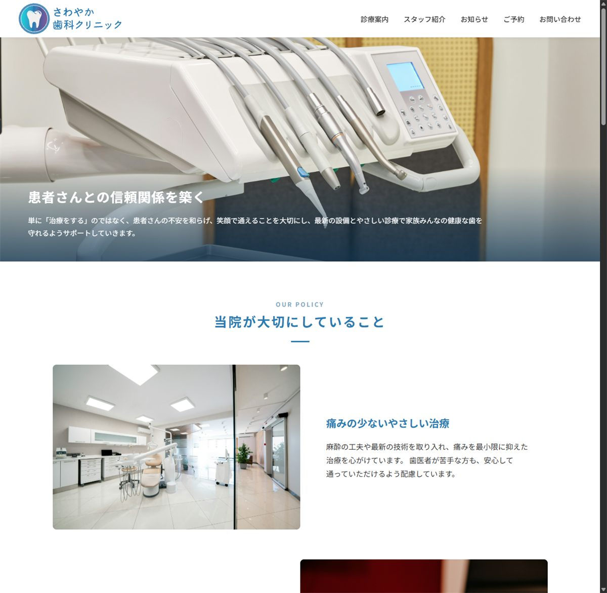
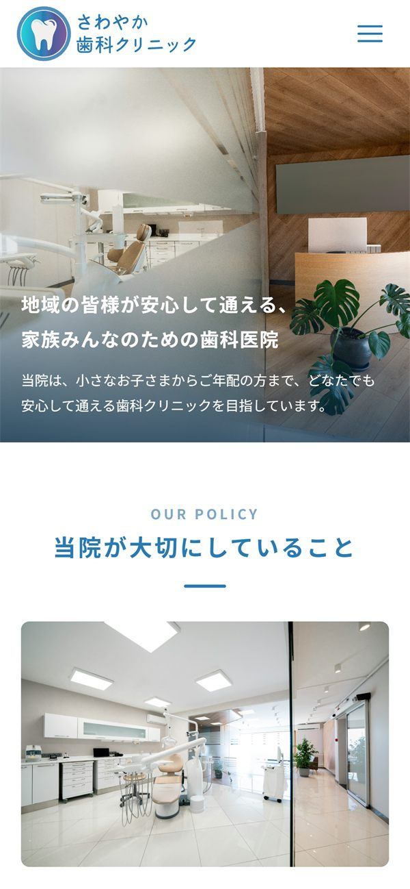
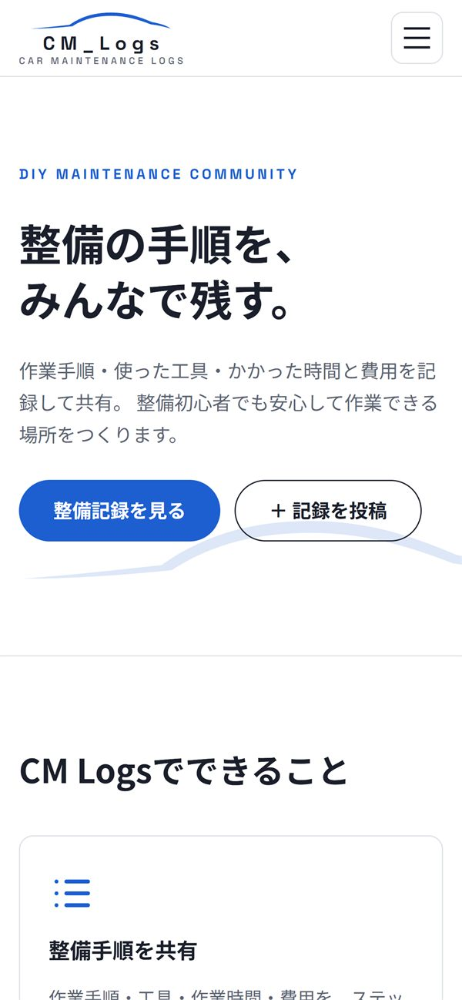
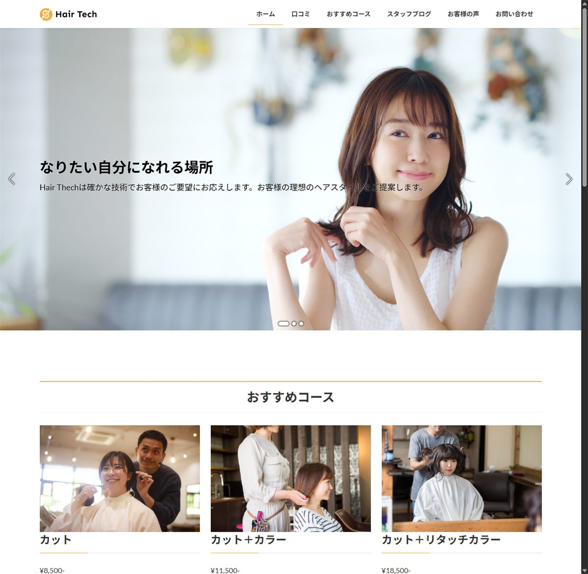
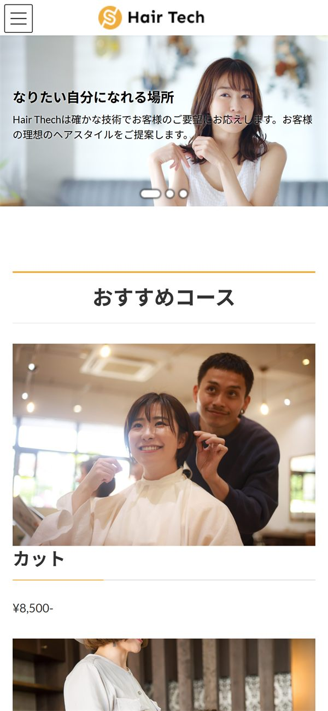
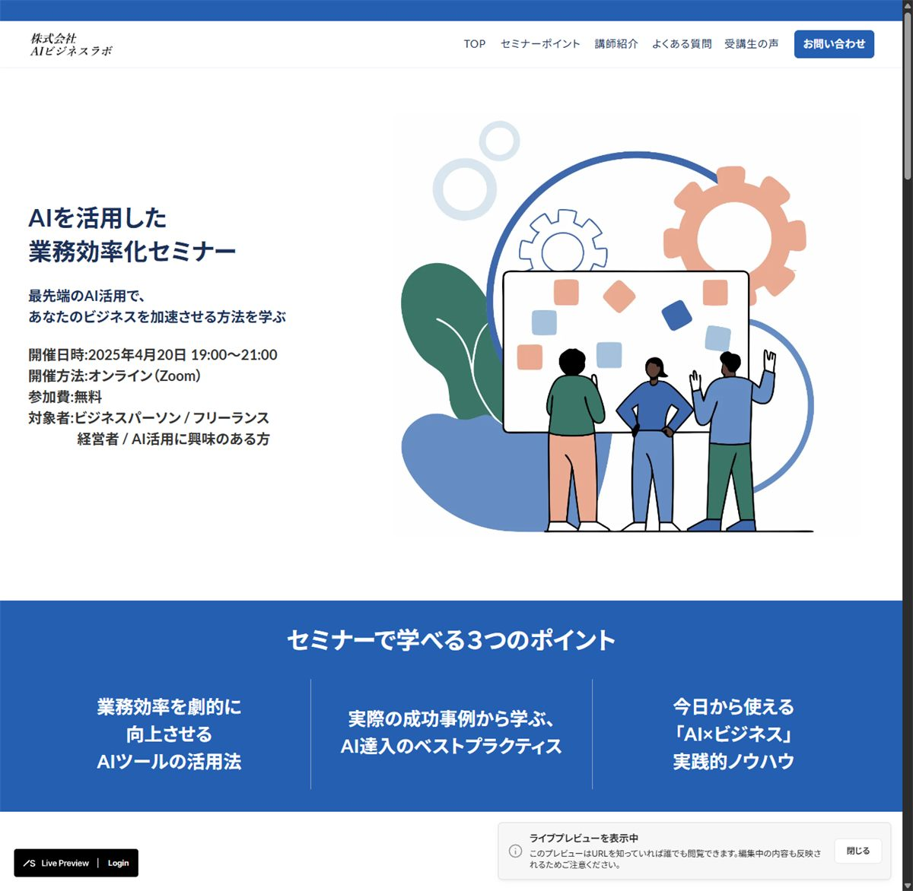
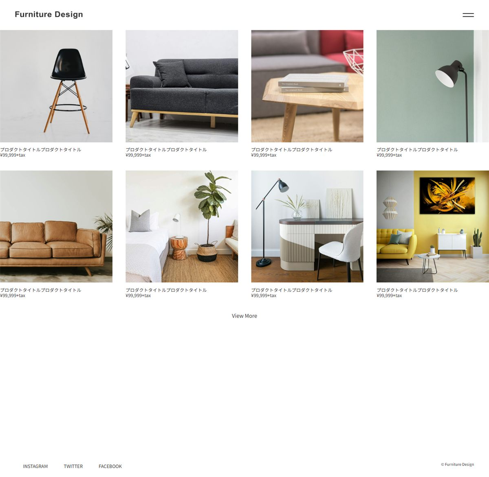
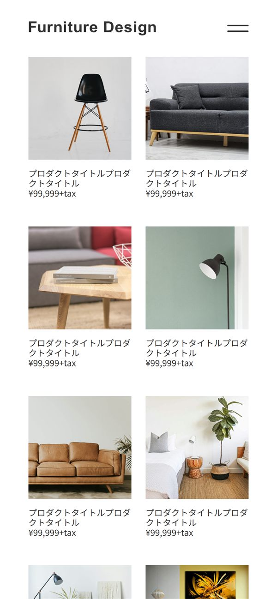
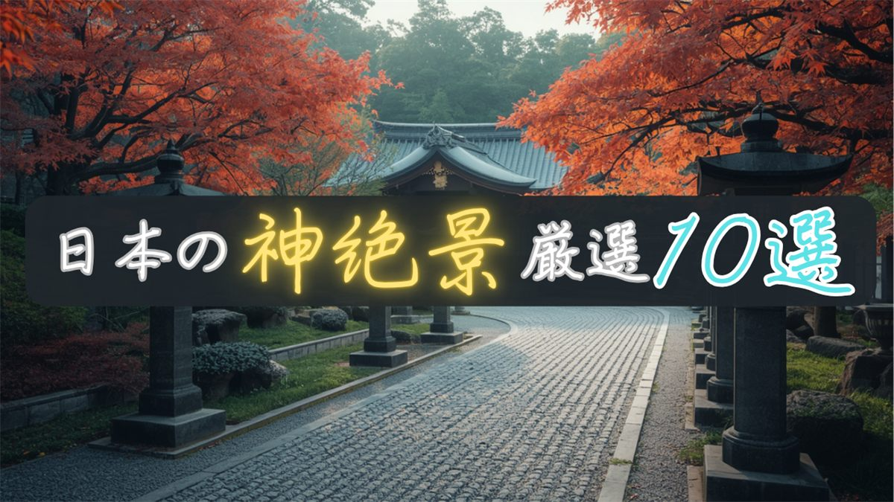

WEB DESIGN / CODING / WORDPRESS
丁寧に、確実に。
整備士の目線でつくるWebサイト。
自動車整備士として培った「点検・確認」の習慣を、Web制作にも。見た目だけでなく、更新しやすく壊れにくいサイトづくりを心がけています。
WORKS
PC・スマホ両方の表示をひと目で確認できます
-


NO.01
ケーススタディ／WordPressオリジナルテーマ
さわやか歯科クリニック
青と白を基調にした歯科クリニックのサイト。要件をもとにオリジナルテーマで構築し、予約フォームやスマホ表示にも対応。[工夫した点]
-


NO.02
スクール制作／Ruby on Rails・AWS
CM_Logs
車のメンテナンス手順を投稿・共有できるコミュニティサイト。ER図・画面設計から作り、AWSで公開まで経験（現在は公開終了）。その後、Rails 8.1で一から作り直しました。
-


NO.03
ケーススタディ／WordPress
Cafe Harmonie
架空のカフェを想定したWordPressサイト。既存テーマを使用して構築しました。[制作のポイントを1〜2行で]
-


NO.04
スクール課題／WordPress・Lightning
Hair Tech
美容室を想定したWordPressサイト。既存テーマ「Lightning」を使用し、おすすめコース・お客様の声・スタッフブログ・お問い合わせフォームを構築しました。
-


NO.05
ケーススタディ／STUDIO
AI業務効率化セミナー LP
「株式会社AIビジネスラボ」のセミナー告知LPを想定したケーススタディ。ノーコードツール「STUDIO」で、開催概要・セミナーのポイント・講師紹介・よくある質問・受講生の声を1ページにまとめました。
-

-


-

ABOUT
村田 陸Riku Murata
本業は自動車整備士。2025年6月からWeb制作を学び始め、現在はWordPressのオリジナルテーマ制作に取り組んでいます。整備の仕事で身についた「丁寧な確認」と「期限を守る段取り」を、Web制作でも大切にしています。
- HTML / CSS
- SCSS
- JavaScript
- WordPress
- Figma
- Canva
対応時間：平日夜間・休日中心（ご連絡には日中も気づき次第お返事します）
学習記録や制作の裏側をブログで発信しています。
BLOG